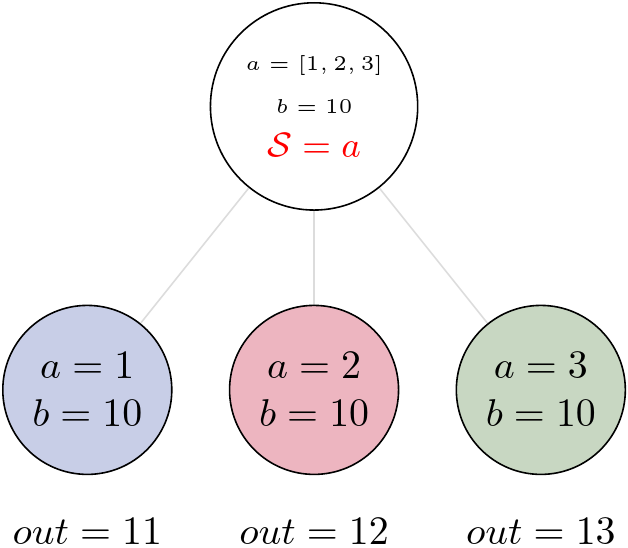
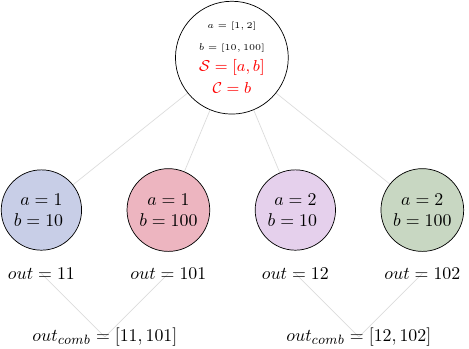
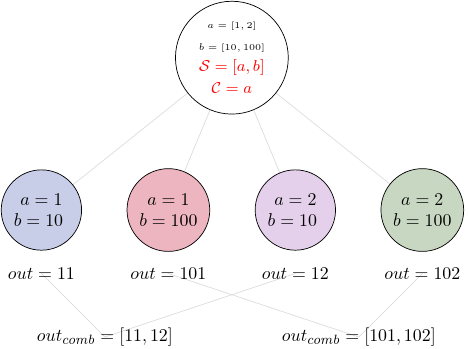
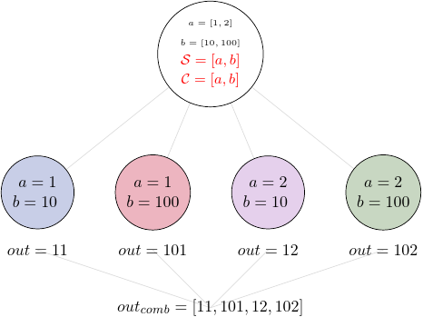

3. Tasks with States#
Task might be run for a single set of input values or we can generate multiple sets, that will be called “states”. If we want to run our Task multiple times we have to provide an input that is an iterable and specify the way we want to map values of the inputs to the specific states. In order to do it, we set so-called splitter.
Let’s start from a simple FunctionTask that takes a list as an input:
import nest_asyncio
nest_asyncio.apply()
import pydra
@pydra.mark.task
def add_two(x):
return x + 2
task1 = add_two(x=[1, 2, 3])
Before we set any splitter, the task’s state should be None
task1.state is None
True
Now, we can set the splitter by using the split method. Since our task has only one input, there is only one option to create a set of inputs, i.e. splitter="x":
task1.split('x')
<pydra.engine.task.FunctionTask at 0x7fe98cf1f050>
Now, we can check that our task has a state:
task1.state
<pydra.engine.state.State at 0x7fe98cdb3450>
And we can print information about the state:
print(task1.state)
State for add_two with a splitter: add_two.x and combiner: []
within the state information about the splitter has been stored:
task1.state.splitter
'add_two.x'
Note, that pydra adds name of the function to the name of the input.
Now, we can run the task and check results:
task1()
task1.result()
[Result(output=Output(out=3), runtime=None, errored=False),
Result(output=Output(out=4), runtime=None, errored=False),
Result(output=Output(out=5), runtime=None, errored=False)]
We can also return results together with values of the input, we just have to set an additional argument return_inputs to True (or val)
task1.result(return_inputs=True)
[({'add_two.x': 1}, Result(output=Output(out=3), runtime=None, errored=False)),
({'add_two.x': 2}, Result(output=Output(out=4), runtime=None, errored=False)),
({'add_two.x': 3}, Result(output=Output(out=5), runtime=None, errored=False))]
If we want to return indices instead of values, we can set return_inputs to ind
task1.result(return_inputs='ind')
[({'add_two.x': 0}, Result(output=Output(out=3), runtime=None, errored=False)),
({'add_two.x': 1}, Result(output=Output(out=4), runtime=None, errored=False)),
({'add_two.x': 2}, Result(output=Output(out=5), runtime=None, errored=False))]
For tasks with a state pydra prepare all sets of inputs and run the task for each of the set. We could simply represent this by the following figure:

3.1. Multiple inputs and state splitting#
We can also use State for functions with multiple inputs:
@pydra.mark.task
def add_var(a, b):
return a + b
Now we have more options to define splitter, it depends on the type of inputs and on our application. For example, we could have a that is a list, b that is a single value, and split over a values:
task2 = add_var(a=[1, 2, 3], b=10).split('a')
task2()
task2.result()
[Result(output=Output(out=11), runtime=None, errored=False),
Result(output=Output(out=12), runtime=None, errored=False),
Result(output=Output(out=13), runtime=None, errored=False)]
Now we have three results for each element from the a list and the value of b is always the same.

But we can have lists for both inputs, and use both inputs in the splitter. Let’s assume that a and b are two elements lists.
task3 = add_var(a=[1, 2], b=[10, 100])
Now, we have two options to map the input values, we might want to run the task for two sets of values: (a=1, b=10) and (a=2, b=100), or we might want to run the task for four sets: (a=1, b=10), (a=1, b=100), (a=2, b=10) and (a=2, b=100).
The first situation will be represented by the so-called “scalar” splitter, the later by the so-called “outer” splitter.
3.1.1. Scalar splitter#
Let’s start from the scalar splitter, that uses parentheses in the syntax:
task3.split(('a', 'b'))
task3()
task3.result()
[Result(output=Output(out=11), runtime=None, errored=False),
Result(output=Output(out=102), runtime=None, errored=False)]
As we expected, we have two outputs: 1+10=11 and 2+100=102.
We can represent the execution by the graph:

3.1.2. Outer splitter#
For the outer splitter we will use brackets:
task4 = add_var(a=[1, 2], b=[10, 100])
task4.split(['a', 'b'])
task4()
task4.result()
[Result(output=Output(out=11), runtime=None, errored=False),
Result(output=Output(out=101), runtime=None, errored=False),
Result(output=Output(out=12), runtime=None, errored=False),
Result(output=Output(out=102), runtime=None, errored=False)]
Now, we have results for all of the combinations of values from a and b.

Note, that once you set the splitter, you will get error when you try to set the splitter again. However, you can always set overwrite to True if you really intend to change the splitter.
task4.split(('a', 'b'))
---------------------------------------------------------------------------
Exception Traceback (most recent call last)
Cell In[16], line 1
----> 1 task4.split(('a', 'b'))
File /usr/share/miniconda/envs/pydra-tutorial/lib/python3.11/site-packages/pydra/engine/core.py:562, in TaskBase.split(self, splitter, overwrite, cont_dim, **kwargs)
560 # if user want to update the splitter, overwrite has to be True
561 if self.state and not overwrite and self.state.splitter != splitter:
--> 562 raise Exception(
563 "splitter has been already set, "
564 "if you want to overwrite it - use overwrite=True"
565 )
566 if cont_dim:
567 for key, vel in cont_dim.items():
Exception: splitter has been already set, if you want to overwrite it - use overwrite=True
For more inputs we can create more complex splitter, and use scalar and outer splitters together. Note, that the scalar splitter can only work for lists that have the same length, but the outer splitter doesn’t have this limitation.
Let’s run one more example that takes four inputs, x and y components of two vectors, and calculates all possible sums of vectors. x components should be kept together with corresponding y components (i.e. scalar splitters: ("x1", "y1") and ("x2", "y2")), but we should use outer splitter for two vectors to get all combinations.
@pydra.mark.task
def add_vector(x1, y1, x2, y2):
return (x1 + x2, y1 + y2)
task5 = add_vector(
name='add_vect',
output_names=['x', 'y'],
x1=[10, 20],
y1=[1, 2],
x2=[10, 20, 30],
y2=[10, 20, 30],
)
task5.split(splitter=[('x1', 'y1'), ('x2', 'y2')])
task5()
task5.result()
[Result(output=Output(out=(20, 11)), runtime=None, errored=False),
Result(output=Output(out=(30, 21)), runtime=None, errored=False),
Result(output=Output(out=(40, 31)), runtime=None, errored=False),
Result(output=Output(out=(30, 12)), runtime=None, errored=False),
Result(output=Output(out=(40, 22)), runtime=None, errored=False),
Result(output=Output(out=(50, 32)), runtime=None, errored=False)]
We should get six outputs: two elements for vector1 times three elements for vector2.
3.2. Combining the output#
When we use splitter, we can also define combiner, if we want to combine together the results.
If we take the task4 as an example and combine all results for each element of the input b, we can modify the task as follows:
task5 = add_var(a=[1, 2], b=[10, 100])
task5.split(['a', 'b'])
# adding combiner
task5.combine('b')
task5()
task5.result()
[[Result(output=Output(out=11), runtime=None, errored=False),
Result(output=Output(out=101), runtime=None, errored=False)],
[Result(output=Output(out=12), runtime=None, errored=False),
Result(output=Output(out=102), runtime=None, errored=False)]]
Now our result contains two elements, each one is a list. The first one contains results for a=1 and both values of b, and the second contains results for a=2 and both values of b. Let’s print the result again using return_inputs:
all_results = task5.result(return_inputs=True)
print(f'first list, a=1: {all_results[0]}')
print(f'\n second list, a=2: {all_results[1]}')
first list, a=1: [({'add_var.a': 1, 'add_var.b': 10}, Result(output=Output(out=11), runtime=None, errored=False)), ({'add_var.a': 1, 'add_var.b': 100}, Result(output=Output(out=101), runtime=None, errored=False))]
second list, a=2: [({'add_var.a': 2, 'add_var.b': 10}, Result(output=Output(out=12), runtime=None, errored=False)), ({'add_var.a': 2, 'add_var.b': 100}, Result(output=Output(out=102), runtime=None, errored=False))]

But we could also group all elements from the input a and have a different combined output:
task6 = add_var(a=[1, 2], b=[10, 100])
task6.split(['a', 'b'])
# changing the combiner
task6.combine('a')
task6()
task6.result()
[[Result(output=Output(out=11), runtime=None, errored=False),
Result(output=Output(out=12), runtime=None, errored=False)],
[Result(output=Output(out=101), runtime=None, errored=False),
Result(output=Output(out=102), runtime=None, errored=False)]]
We still have two elements in our results, but this time the first element contains results for b=10 and both values of a, and the second contains results for b=100 and both values of a.
all_results = task6.result(return_inputs=True)
print(f'first list, b=10: {all_results[0]}')
print(f'\n second list, b=100: {all_results[1]}')
first list, b=10: [({'add_var.a': 1, 'add_var.b': 10}, Result(output=Output(out=11), runtime=None, errored=False)), ({'add_var.a': 2, 'add_var.b': 10}, Result(output=Output(out=12), runtime=None, errored=False))]
second list, b=100: [({'add_var.a': 1, 'add_var.b': 100}, Result(output=Output(out=101), runtime=None, errored=False)), ({'add_var.a': 2, 'add_var.b': 100}, Result(output=Output(out=102), runtime=None, errored=False))]

We can also combine all elements by providing a list of all inputs to the combiner:
task7 = add_var(a=[1, 2], b=[10, 100])
task7.split(['a', 'b'])
# combining all inputs
task7.combine(['a', 'b'])
task7()
task7.result()
[Result(output=Output(out=11), runtime=None, errored=False),
Result(output=Output(out=101), runtime=None, errored=False),
Result(output=Output(out=12), runtime=None, errored=False),
Result(output=Output(out=102), runtime=None, errored=False)]
This time the output contains one element that is a list of all outputs:

3.3. Lists as an input#
Note that list can be used as an input even without using any splitter, there are functions that take a list as a single input value:
@pydra.mark.task
def moment(lst, n):
return sum([i**n for i in lst]) / len(lst)
task8 = moment(n=3, lst=[2, 3, 4])
task8()
task8.result()
Result(output=Output(out=33.0), runtime=None, errored=False)
3.4. Exercise 1#
Let’s say we want to calculate squares and cubes of integers from 2 to 5, and combine separately all squares and all cubes:
First we will define a function that returns powers:
Show code cell content
@pydra.mark.task
def power(x, n):
return x**n
Now we can create a task that takes two lists as its input, outer splitter for x and n, and combine all x:
Show code cell content
task_ex1 = power(x=[2, 3, 4, 5], n=[2, 3]).split(['x', 'n']).combine('x')
task_ex1()
task_ex1.result()
[[Result(output=Output(out=4), runtime=None, errored=False),
Result(output=Output(out=9), runtime=None, errored=False),
Result(output=Output(out=16), runtime=None, errored=False),
Result(output=Output(out=25), runtime=None, errored=False)],
[Result(output=Output(out=8), runtime=None, errored=False),
Result(output=Output(out=27), runtime=None, errored=False),
Result(output=Output(out=64), runtime=None, errored=False),
Result(output=Output(out=125), runtime=None, errored=False)]]
The result should contain two list, the first one is for squares, the second for cubes.
Show code cell content
squares_list = [el.output.out for el in task_ex1.result()[0]]
cubes_list = [el.output.out for el in task_ex1.result()[1]]
print(f'squares: {squares_list}')
print(f'cubes: {cubes_list}')
squares: [4, 9, 16, 25]
cubes: [8, 27, 64, 125]
3.5. Parallel execution#
We run task multiple times for multiple sets of input, but we didn’t talk about the execution time. Let’s create a function that sleeps for a second and run for four values:
import time
@pydra.mark.task
def add_two_sleep(x):
time.sleep(1)
return x + 2
task9 = add_two_sleep(x=[1, 2, 3, 4]).split('x')
t0 = time.time()
task9()
print(f'total time: {time.time() - t0}')
task9.result()
total time: 2.3384249210357666
[Result(output=Output(out=3), runtime=None, errored=False),
Result(output=Output(out=4), runtime=None, errored=False),
Result(output=Output(out=5), runtime=None, errored=False),
Result(output=Output(out=6), runtime=None, errored=False)]
The total time will depend on the machine you are using, but it could be below 1.1s, so clearly the tasks are running in parallel!
If we run Task that has a State, pydra will automatically create a Submitter with a default Worker that is cf, i.e. concurrent.futures.ProcessPoolExecutor.
We could also create a Submitter first, and than use it to run the task:
task10 = add_two_sleep(x=[1, 2, 3, 4]).split('x')
t0 = time.time()
with pydra.Submitter(plugin='cf') as sub:
task10(submitter=sub)
print(f'total time: {time.time() - t0}')
print(f'results: {task10.result()}')
total time: 2.335334300994873
results: [Result(output=Output(out=3), runtime=None, errored=False), Result(output=Output(out=4), runtime=None, errored=False), Result(output=Output(out=5), runtime=None, errored=False), Result(output=Output(out=6), runtime=None, errored=False)]
or we can provide the name of the plugin:
task11 = add_two_sleep(x=[1, 2, 3, 4]).split('x')
t0 = time.time()
task11(plugin='cf')
print(f'total time: {time.time() - t0}')
print(f'results: {task11.result()}')
total time: 2.336702585220337
results: [Result(output=Output(out=3), runtime=None, errored=False), Result(output=Output(out=4), runtime=None, errored=False), Result(output=Output(out=5), runtime=None, errored=False), Result(output=Output(out=6), runtime=None, errored=False)]
The last option for running the task is to create a Submitter first and run the submitter (Submitter is also a callable object) with the task as a runnable:
task12 = add_two_sleep(x=[1, 2, 3, 4]).split('x')
t0 = time.time()
with pydra.Submitter(plugin='cf') as sub:
sub(runnable=task12)
print(f'total time: {time.time() - t0}')
print(f'results: {task12.result()}')
total time: 2.3200018405914307
results: [Result(output=Output(out=3), runtime=None, errored=False), Result(output=Output(out=4), runtime=None, errored=False), Result(output=Output(out=5), runtime=None, errored=False), Result(output=Output(out=6), runtime=None, errored=False)]
All of the execution time should be similar, since all tasks are run by pydra in the same way, i.e. pydra creates a submitter with ConcurrentFutures worker, if a number of processors is not provided, ConcurrentFutures takes all available processors as max_workers. However, if we want to set a specific number of processors, we can set it using n_procs when creating a Submitter. Let’s see how the execution time changes when we use n_procs=2.
task13 = add_two_sleep(x=[1, 2, 3, 4]).split('x')
t0 = time.time()
with pydra.Submitter(plugin='cf', n_procs=2) as sub:
sub(runnable=task13)
print(f'total time: {time.time() - t0}')
print(f'results: {task13.result()}')
total time: 2.318612575531006
results: [Result(output=Output(out=3), runtime=None, errored=False), Result(output=Output(out=4), runtime=None, errored=False), Result(output=Output(out=5), runtime=None, errored=False), Result(output=Output(out=6), runtime=None, errored=False)]
Now, the total time could be significantly different. For example, if your machine has at least 4 processors, the previous tasks9 - task12 took around 1s to run, but the task13 took around 2s.
If you have 2 processors or less, you should not see any difference in the execution time.